4.1 Знакомство с функциями
В этом разделе мы с вами поговорим про пользовательские функции. Функции делают жизнь программиста проще, ведь не надо каждый раз писать один и тот же код. Плюс функции делают код читабельней, он становится чище и в нем проще разобраться.
Функция это обособленный участок кода со своими переменными и операции. Что самое главное функция делает законченные действия. Функции могут получать значение и отдавать значения. Для того чтобы создать функцию необходимо воспользоваться специальным служебным словом function. После function идет наименование функции. Наименования функция так же как и переменные создаются согласно определенным правилам. Функции должны начинаться либо с буквы, либо со знака подчеркивания, все, что будет происходить после этого символа не важно, какое количество также неважно. Стоит отметить, что функция не может начинаться с цифры, так же как и переменная. Давайте посмотрим. Назовем, например, нашу функцию getSum. Также важно обратить внимание на то, что само наименование функции должно четко отражать что функция будет делать в данном случае мы сказали что наша функция будет возвращать какую то сумму. Хочу обратить ваше внимание на то, что в PHP нельзя создавать несколько функций с одинаковым названием. Более того в наименовании функций не важен регистр букв.
Если мы все же определили где то в коде функции с одинаковым названием то PHP даст нам об этом знать. Интерпретатор будет ругаться относительно того, что функция уже определена один раз и второй раз она вам не даст определить. Для того чтобы такого не произошло, функцию можно проверить существует она или нет. В PHP существует встроенная функция function_exists.
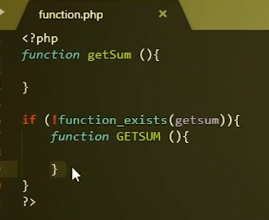
Существует еще один способ решения конфликта имен. Как в любом другом языке программирования в PHP существует пространство имен. Это имеющий название фрагмент программы со своими переменными, функциями, классами и так далее. В пространстве имен может находиться любой код. Но пространство имен будет относиться только классом интерфейса к функциям, то есть с помощью пространства имен можно определять только классы или функции.
Для того чтобы определить пространство имен в PHP существует ключевое зарезервированное слово namespace. Данное слово namespace всегда определяется в начале файла. Поэтому мы в начале нашего файла определим зарезервированые переменные, зарезервированную функцию namespace, назовем ее, дадим имя GlobalSum, который говорит о том что в этом namespace будут находиться методы и функции, которые будут работать с глобальными какими-то суммами. Сейчас нам неважно как ее назвать. Главное мы отразили, что внутри есть функция, которая будет работать и получать какую то сумму. Для того чтобы корректно нам показать как работает namespace необходимо создать еще один файл. Так создадим файл. Создадим в нем namespace, называться он будет localsum. Для этого мы еще определим функцию и назовем ее как в предыдущем файле getsum. Как вы видите названия в двух файлах совпадают. Как подключить два файла на одной странице. Для этого мы используем специальную функцию PHP, который подключает несколько файлов в одном месте. Мы воспользуемя функцией, с которой вы ознакомились в предыдущем курсе.
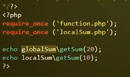
Если namespace находятся у разных каталогов нам нужно использовать абсолютные пути. Таким образом, мы разделили логику на два различных совершенно контейнера. При этом там могут быть совершенно одинаковые названия функций переменных классов интерфейса рейдов и так далее. Вернемся к аргументам, о котором мы прописали ранее для того, чтобы показать как работает функция. Может быть неограниченное количество аргументов. Аргументы пишутся в кавычках через запятую, если есть несколько аргументов, мы через запятую с соответствующими названиями записываем. Хочу обратить, что это название переменных, это локальные названия переменных которые будут использоваться только в самой функции. Надо сказать, что аргументы для функции не обязательны. То есть вполне можно от них избавиться. Но здесь должна быть какая-то логика и какое-то значение, может вернуться либо какие то действия должны произойти. Но мы все-таки вернемся к аргументам потому, что мы сейчас о них подробно расскажем. Итак, я не рекомендую, чтобы у вас в функции было больше трех аргументов. Это уже значит плохо спланированная функция, значит, что она не делает какое то конкретное назначение, которое от нее требуется. Зачастую это обычно одна две или три аргумента все что больше, это либо что-то очень уникальное, например какая-нибудь функция по работе с базами данных, где нужно как минимум пять аргументов. Если же у вас получается больше трех аргументов, где то вы неправильно проектировали и вам нужно подумать о том как оптимизировать вашу функцию, возможно какие-то внутренние логики стоит перенести на другую функцию. Функция принимает несколько типов аргументов. Первое это просто передача значения. А также есть аргументы по умолчанию. Чтобы определить аргументы по умолчанию, нам нужно этому аргументу присвоить какое либо значение. Хочу обратить внимание, что это значение может быть только константа. Это не может быть переменная или другая какая-то функция. Таким способом мы задаем значения по умолчанию обращаю ваше внимание что при вызове функции не обязательно указывать значение по умолчанию, если оно не вызвано аргумент по умолчанию. Тогда никакой ошибки не будет, а подставится как раз то значение по умолчанию, которое мы здесь определили.
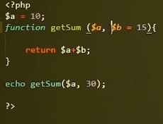
Стоит отметить, что значения по умолчанию должны быть всегда в конце. Есть еще третий тип передачи аргументов функции, о котором мы поговорим чуть позже. Сейчас я вам хочу рассказать о дополнительных возможностях при работе с аргументами. Смотрите иногда мы не знаем сколько аргументов. Такое происходит очень редко, но тем не менее могут быть задачи в, которых это необходимо. Для этого есть специальные функции, которыми можно получить аргументы внутри функции. Это функция вернет нам количество аргументов функции func_num_args.
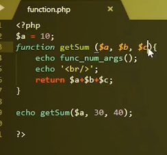
Еще одним важным методом передачи аргумента является передача аргументы по ссылке. Это очень важный метод, но используется очень редко. Он нужен в том случае, когда необходимо сделать так чтобы аргумент самой переменной, не умирал после выполнения функции. Как я уже говорил ранее все аргументы то локальные перемены. Поэтому после выполнения функций они все умрут. И для того чтобы заставить их жить можно передать аргумент ссылкой. Давайте сначала разберемся, что же такое ссылка. Представьте, что у вас есть в руках коробка, коробка это переменная, в этой коробке содержится значение переменной.
Что же такое ссылка. Представьте если у вас есть коробка с одной стороны, есть вырез и это переменная может залезть в эту коробку с этой стороны, взять какое то значение и показать ее. Ссылка делает следующее, она делает вторую дырку с другой стороны у коробочки и какая-то другая перемена может залезть точно в эту же коробочку достать оттуда-то же самое значение и показать его. Более того любая из этих переменных может залезть в эту коробочку с разных сторон и положить туда любое значение. Тот, кто последний положил туда значения, то и значение будет лежать в этой коробочке. Давайте покажем на примере, сейчас оставим тот код который есть, он нам немножечко пригодится попозже.
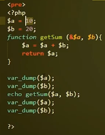
Таким образом мы можем влиять из функции на какую то глобальную переменную, которая определена не в самой функции, с определением параметра посылки передачи стоит очень аккуратно работать, потому что можно в какой то определенный момент не найти ее или сделать неправильный код, который впоследствии испортит всю картину. Мы с вами забежали немножко вперед мы еще не рассказали вам, что такое тело функция. При этом предыдущем примере мы в теле функции выполняли какие-то операции. Давайте же рассмотрим, что такое тело функции что в ней можно делать и что такое оператор партнер. Итак, все что находится внутри фигурных скобок и является телом функцией. В теле функции могут быть абсолютно любые операции. Но это будет, как я уже ранее сказал локальная операция.
Они будут происходить только внутри этой функции никак не влиять на глобальное окружение. Тем не менее, мы уже рассмотрели тот вариант как можно влиять на глобальные перемены с помощью ссылок. Здесь как я уже сказал в теле функции могут быть совершенно любые операции можно приводить одно число к другому типу складывать вычитать. Главное чтобы в теле функции была выстроена логика таким образом, чтобы эта функция возвращала одно какое то действие. Может быть значение, может быть массив и так далее, но оно должно быть закончено. Также в теле функции есть специальная функция функция return, заканчивает выполнение функций и возвращает какое либо значение. Давайте посмотрим пару примеров, как его можно применять. В данном примере ведущим которой мы с вами рассматривали термин в конце функции, за этой функции нет никаких операций. И она возвращает собственное сложение а. Давайте представим что у нас есть некое условие, которое говорит если а больше 10. Тогда мы сразу вернем например строку А. Когда интерпретатор встретит return функцию он закончит любое выполнение. И дальше этого условия не пойдет, он не станет складывать нашу, а и не вернет нам 30. Давайте для примера попробуем передать аргумент по ссылке. Давайте посмотрим что получится. Так единственное что у нас меньше 10 давайте сделаем меньше мести здесь поставим меньше мести. Давайте посмотрим. Ну конечно равно не меньше десяти. Итак смотрите а меньше 10 и следующие значения а. Хотя мы его и передавали по ссылке оно также является десятью.
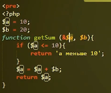
А можно использовать не только в конце функции, но и где-то в середине когда нужно сразу закончить выполнение функций. Это может быть какое-то исключение или это может быть заранее определенный сценарий при котором нужно завершить функцию. Дальнейшее его выполнение бессмысленно. Также хочу сказать, что оператор может и не быть функцией, это часто используемое явление, когда не нужно возвращать какое-то значение, а нужно просто выполнить какие то действия и на этом завершить. Ранее нам говорили, что язык PHP это язык программирования со слабой типизации. Это действительно так и есть и на примерах, которые мы вам сегодня уже показывали это наглядно видно, мы нигде, никак не определяем типы данных, которые входят в аргументы. Но на самом деле есть приведение типов. И мы сейчас с вами это рассмотрим. В PHP 5 появилась возможность указывать типы аргументов, которые будут входить в функции. Давайте это посмотрим, на нашем примере. Мы сейчас скажем, что первый аргумент должен принимать значение целого числа. Для этого есть специально зарезервированный оператор int. А второе значение у нас тоже должно быть int. Если мы сделаем такую запись, то функция будет знать, что сейчас на вход она получит переменные, а с целым числом и переменных в целом числом. Фактически оно у нас так и есть. Давайте просто это проверим. Просто никаких ошибок работа интерпретатор никак не остановлена. Мы получили ровно те значения, которые мы получили в предыдущем примере. Давайте посмотрим мы сейчас уберем входные параметры и попробуем в передать не целое число, а например строку. Как вы уже знаете из предыдущих модулей, когда нет четкой типизации, PHP будет сам приводить все.
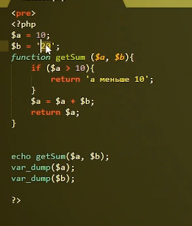
Давайте усложним задачу. Что если мы в глобальные переменные передадим данные типа float, например переменная а будет равна 1,5, а переменная b будет равна 2,5. Еще раз хочу сказать что перемены и а сейчас является переменными типа float. А мы на вход ждем перемены типа интенсивного. Давайте посмотрим, что получится. Смотрите, какая интересная вещь у нас значение сложения а равно 3. Хотя переменная а является полторы а переменная равняется 2,5. Фактически сумма должна быть 4, но мы имеем 3. Все из-за приведения типов. Соответственно полтора он приводит в единицу. А вот 2,5 приводит в 2. Тем самым складывает 1 2 и на выходе мы получаем 3. Все что я вам сейчас рассказал это пример не строгой типизации для отдельных файлов. Начиная с версии 7, в принципе можно подключить строгую. Чем она отличается от не строгой. Мы сейчас расскажем и покажем на примере чтобы включить строгую в PHP. Нужно воспользоваться определенным оператором.
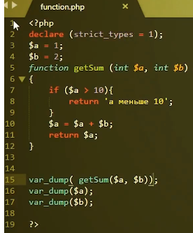
Функция declare и внутри этой функции назначение strict_types =1. Так оно и нет. Так что мы сделали этим кодом. Мы заставили именно этот конкретный файл работать в режиме строгой. Посмотрим, что же произойдет с предыдущим примерам. Функция declare должна быть самой первой строкой. Запускаем и видим, что у нас вылезает ошибка о том, что один из аргументов имеет неправильный тип данных и передает float, а на входе мы ждем целое число. Давайте исправим эту ошибку. Оба аргумента правильные типы данных и видим, что ответ соответственно три один плюс два в сумме дают три. Таким образом, видим что режим строгой типизации будет выдавать нам ошибку в том случае если переданы на вход функции неверные аргументы. Точнее неверный тип самих аргументов. С выходом 7 появилась возможность задавать не только типы аргументов, но еще и тип возвращаемого значения функции return. Для этого необходимо в коде поставить две точки после круглых кубок в которых этот аргумент и указать тип возвращая ему значение в нашем случае это. Давайте проверим как это работает.
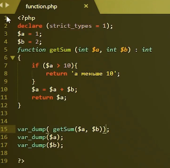
Давайте попробуем изменить что-нибудь в нашей истории. Мы скажем, что результатом нашей функции будет являться не целое число, а строка. Мы получаем ошибку. Мы включили режим строгой на выходе. У нас сейчас фактически это целое число 3. Но мы говорим, что на выходе должна быть строка. PHP Не понимает этого и выдает ошибку.
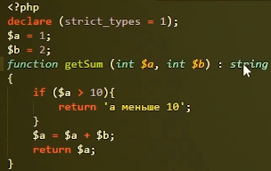
Еще раз хотелось бы остановиться на таком понятии как область видимости. На одном из прошлых примеров я уже рассказывал, что внутри функция создается переменной которая имеет локальную область видимость. То есть они не видны из функций. И внутри функции не видны перемены, которые объявлены вне этой функции. Мы приводили примеры, но давайте посмотрим пример, когда у нас локальный является не переменная, а функция. Для этого нам нужно внутри наши функции лицом определить еще одну функцию. Назовем ее getSubSum. В нее будут входить те же самые параметры.
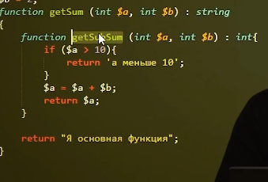
Если мы попробуем вот этой функции обратиться, без обращения к родительской функции. У нас ничего не получится. Давайте посмотрим. И мы увидим что у нас выйдет ошибка, которая скажет о том что функции еще не определена. Теперь попробуем вот так.
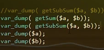
Этим примером я хотел вам показать, как можно внутри генерировать различное количество переменных и функций, которые не будут доступны извне, до того как вы не вызовете основную функцию. Помните мы с вами говорили о том что аргумент можно передавать посылки тем самым подарить вторую жизнь переменной, которая определена была до функции и управлять этой переменной не в локальной области видимости а в глобальной области видимость, для того чтобы управлять такими переменными в php есть специальные возможности. Это глобальные переменные глобальные переменные определяются специальным оператором global. Давайте посмотрим на примере.
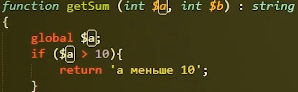
И мы скажем что у нас теперь глобальные перемены. Но что будет, если у нас уже есть глобальная переменная с таким именем. Как раз на этот вопрос мы сейчас ответим этим ходом.
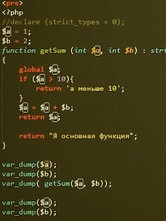
Тем самым мы стали управлять глобальной переменной, а то же самое можно сделать из любой другой переменной, которая хранится внутри функции. Давайте попробуем определить глобальные переменные, которые не хранятся еще в глобальной области видимости.
Давайте рассмотрим еще один вариант объявления глобальные перемены. На этот раз мы ее объявим не в функции, а до объявления функции. Как видите ничего не поменялось. Наша переменная не видна функция.
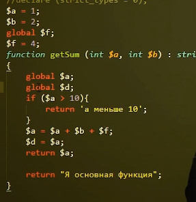
Чтобы было видно внутри нам нужно сказать, что переменная имеет также глобальное происхождение и только в этом случае мы сможем увидеть результат сложения всех этих трех переменных.
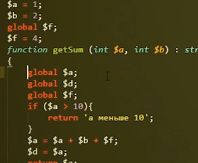
В использовании глобальных переменах достаточно много минусов. Я не рекомендую их использовать. Единственным местом где целесообразно использовать глобальные перемены это является отладка кода, где нужно в нескольких местах получать одно и то же значение и вводить его в какие то логики в теле функция.
Можно также определить статистическую переменную. В отличие локальной переменной она не умирает после выполнения функции и в отличие от глобальной переменной статистическая функция недоступна извне. Она доступна только в локальной области видимости. Давайте посмотрим как ее можно использовать. Для создания статистической переменной необходимо воспользоваться специальной инструкцией стать.
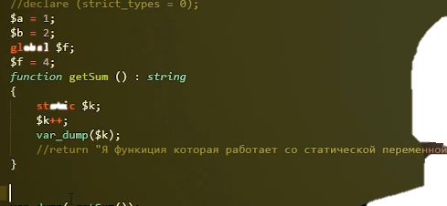
Соответственно К равна у нас единица и функция которая работать фактически переменная это то что возвращает наша функция на самом деле функция может не возвращать ничего собственно. В чем прелесть статистической перемены пока мы ее не видим, чтобы ее нам увидеть нам нужно несколько раз вызвать одну и ту же функцию. Давайте подряд три раза выдаем функцию. Объявляем и видим, что у нас ошибка, которая говорит о том что у нас возвращаем тип данных от функции старика, а мы ничего не возвращаемся верно, это ошибочка.
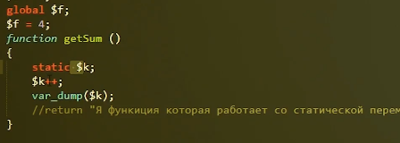
Первый раз, когда мы обратились к функции k имело значение 1. По идее если бы это была не статистическая переменную. Следующий раз мы бы еще раз вместо k увидели единиц. А мы видим двойку в следующий раз тройку и так каждый раз, при новом вызове функции то есть, статическая переменная не умирает после выполнения функций для того чтобы подтвердить что обычная переменная умирает после выполнения функций.
Нужно понимать, что при использовании статистических переменных нужно быть очень аккуратными и очень следить за кодом. Стоит также сказать что функция может не иметь названия, такие функции называют анонимными. Они очень часто используются в замыканиях и callback функциях. Сейчас я просто приведу пару примеров и расскажу как это работает. Давайте откроем наш код. Уберем все лишнее. И сделаем следующее: определим переменную которая будет называться functionAnonim. Полностью функция не может быть анонимной, она должна чему-то принадлежать, либо замыкание, либо callback функция в нашем случае на примере замыкания. Сделаем определение функции, как мы это делали до этого.
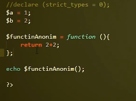
То есть фактически из переменной мы создали функцию, которая выполняет какие-либо действия. В эту функцию можно передавать аргументы.
4.2 Применение функции в коде
Предыдущие модули вы рассматривали много пользовательских функций. Они позволяют расширить функционал и делать те вещи, которые вам нужны на ваших проектах. Это может быть огромное количество вещей, которые нужно делать, которыми вы будете пользоваться постоянно. Функция вы будете использовать абсолютно на любом проекте, пользовательские функции нужны всегда, всегда ими необходимо пользоваться. Давайте ради примера создадим небольшой проект, на котором мы попробуем показать, как хорошо пользоваться этими функциями, как их определять, и как вообще строить структуру проекта. В нашем проекте мы попробуем реализовать хелпер это функция, которая расширяет стандартный функционал языка какого-то, или фреймворка. Часто бывает такое, что необходимо получать какие-то данные, постоянно и одинаковые. Для этого как раз существуют пользовательские функции. Например, нам функционально нужно очень часто получать текущий год, и чтобы постоянно не пользоваться одной и той же функцией php с дополнительными параметрами, мы это сделаем в одной функции. Давайте перейдем к коду. Итак, для начала нам нужно с вами создать структуру нашего будущего приложения. Для этого мы зайдем на наш хост, создадим там папку app. Файл index.php будет служить нам, индексом файла нашего приложения дальше, так как у нас будет создаваться хелпер. Мы создадим для него отдельную папку, в котором будем хранить все хелперы. Дальше мы с вами впервые разделим наш проект на визуальную часть и логику. Для этого мы создадим папку template, в которой будут храниться вся визуальная часть. Пока она будет небольшая, она будет состоять из двух частей. Это будет header и footer. Сейчас мы сделаем только один хелпер.
Дальше давайте соответственно начнем. В предыдущем разделе у нас была форма, в которой мы решали задачи. Давайте возьмем визуальную часть оттуда, не будем придумывать, что то новое. Как разделить один сайт на несколько визуальных частей? Я рекомендую всегда отделять шапку, футер, левую и правую часть, причем левая часть скорее всего должна у вас относиться к шапке, а правая часть к фото. У нас достаточно простой html код и мы его перенимаем. Итак здесь нет никакой логики. Только визуальная часть это не значит, что здесь не будет вставок php кода. Они здесь будут, но они будут только для того чтобы отображения динамической информации. Для того чтобы воспользоваться хелперами, нам конечно нужно их подключить на странице. Давайте подключим это в header. Для чего объясню попозже, воспользуемся уже знакомой вам функцией require_once. Helper для того, чтобы подключить нужно воспользоваться супер глобальным массивом сервер, взять оттуда уже известный вам ключ, значение по ключу документа root. Документ напомню вам это путь от корня сервера, до корня вашего сайта.
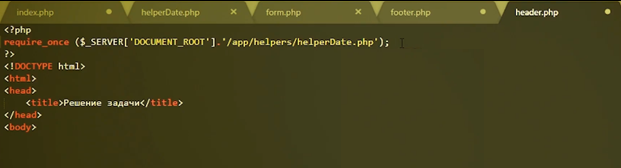
Так мы подключили helper. Дальше скорее всего, я дальше объясню зачем, нам понадобится дополнительный файл. Это файл который будет называться constant.php. В этом у нас будут лежать константы, все константы проекта мы будем класть в этот файл и использовать везде. Для чего это нужно всегда выносить и константы в отдельный файл это фактически файл настроек. Потому что когда вы будете переезжать с одного сервера на другой, например у вас разработка идет на одном сервере. Там у вас там идет привязка к базам данных, у вас там различные идентификации тех или иных полей, то когда вы приедете на другой сервер, там будет совершенно другое окружение, другие пути к тому или иному к той или иной части кода. Поэтому всегда используйте либо какой то файл настроек, либо как я сейчас здесь constant.php. Его тоже мы подключим. Его необходимо подключить самым первым.
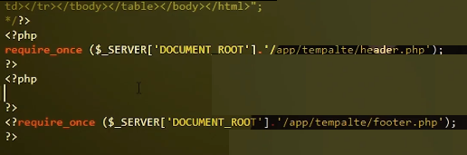
Подключаем в index.php header и footer. Итак мы подключили здесь два самых важных файла, с которыми будем впоследствии работать. Итак чтобы подключить визуальную часть к нам на страницу нам нужно подключить эти файлы. Воспользуемся той же самой Функцией. Сделать заготовочки сразу, чтобы потом не отвлекаться на это. Итак давайте теперь заставим уже немножечко работать наш код и зададим первый хелпер. Обязательно воспользуемся namespace. Это очень хорошая практика для каждого отдельного helper. Итак все функции класса, которые будут внутри этого файла ниже названия namespace будут везде подключаться и везде вызывать их необходимо будет сначала с namespace, а дальше функция или название класса или метода. Давайте начнем писать нашу первую функцию нашего первого helper. Назовем ее getYear. То есть текущий год. Сделали это, чтобы в footer добавить копирайт.
И вот сюда мы должны будем с вами вставить тот самый header. Мы его уже один раз подключили в header. Итак давайте зайдем в helper и напишем. Суть этой функции будет заключаться в том, что она будет возвращать только текущий год и ничего больше. Поэтому мы напишем следующий код. Мы использовали ее на предыдущих курсах. У нее есть аргумент y возвращающий код. Давайте теперь попробуем воспользоваться этим в footer. Нам нужно взять название этого namespace, поместить его первым, обратный слэш и название нашей функции. Давайте запустим код и посмотрим что у нас получилось.
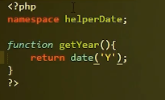
Итак мы сейчас создали первый хелпер, который только получает год. Давайте теперь немножечко поиграем. Продолжим играться с датами. Давайте создадим функцию, которая будет вычитать разницу дней от текущей даты. Например нам нужно понять какое число было позавчера два дня назад. Для этого мы создадим новый хелпер и начиная с этого хелпера, я призываю вас начать оставлять комментарии. Итак во первых есть формат комментариев, я сейчас привожу вам для комментирования. Он очень удобен, он в стандартизирован.
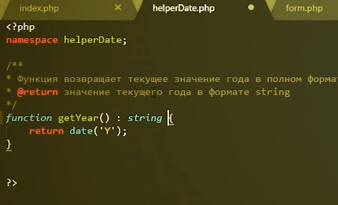
Директива @param позволяет передавать информацию про аргументы функции, а @return показывает какой формат возвращает функция. Итак мы решили что нам нужно написать функцию, которая будет возвращать разницу между текущим днем и количеством указанных дней. Увы считанные минус количество каких то дней от текущей даты. В отличии от первого хелпера, у нас будет возвращаться, точнее приниматься на вход аргумент.
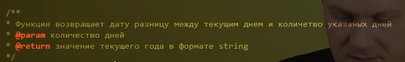
Комментарии мы написали давайте напишем саму функцию. Назовем ее getDate. Давайте сразу приучать себя к жесткой типизации и сразу скажем что должно быть целое число. А возвращаем строку.
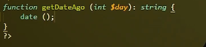
Формат данных должен быть даты, но так как в принципе нет такого формата, нет даты, но есть строка, давайте здесь напишем что возвращаемый тип данных это строка. Итак для начала что нам нужно сделать. Нам нужно от текущей даты отнять количество дней которое указано в параметрах. Как мы определим текущую дату, для этого существует функция date, которую мы уже использовали с набором аргументов точнее, одним аргументом, который нам скажет именно формат этой даты. Теперь же встает вопрос какой формат даты нам необходимо использовать. Для этого я уже заранее создал файл с константами, в которой я хочу заранее определить какой формат даты мы будем использовать на всем сайте. Давайте зайдем в этот файл. Определим константу. Есть полный формат, где есть дата, месяц, год, время, секунды, минуты. Ну наверное этот формат нам сейчас не нужен, для того чтобы выдать только дату, нам нужен сокращенный формат. Это дата, месяц и год.
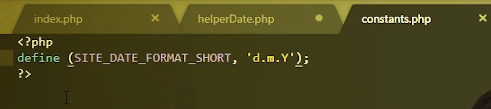
Возвращаемся на хелпер. И доделываем функцию. У функции date, есть второй необязательный параметр, который говорит, а какое время нужно подставить, чтобы вернуть время в формате указанном в первом аргументы.
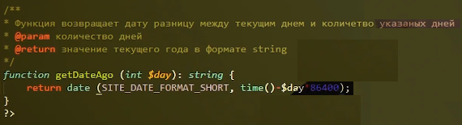
Соответственно мы перевели дни в секунды и от текущей даты отнимаем количество секунд до нужной нам даты и выводим дату в формате, который мы указали в константа. Давайте посмотрим что у нас получилось. Для начала нужно сначала вывести ее на индекс страницы, мы сделаем эхо и выведем. Вызовем нашу функцию передадим туда количество дней 5, сохраним, обновим и получим, что 5 дней назад была дата 15.03.2018.
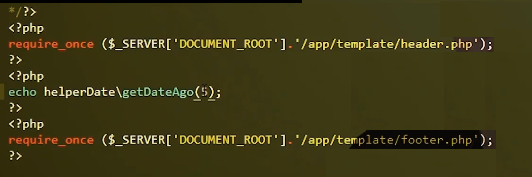
На самом деле это только начало функции и функция так не должна выглядеть. Когда мы получили с вами ошибка, мы просто не указали первый параметр. Такого в вашем коде не должно быть. Даже если вы не указали ничего, там должна быть какая то обработка ошибок. В нашем случае я предлагаю сделать это.
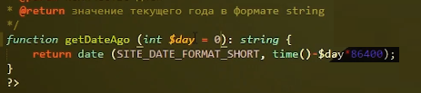
Это аргумент значения по умолчанию. То есть если ничего не ввели тогда это значения ноль. То есть вывести практически сегодняшнюю дату и в том случае, если мы ничего не введем он выйдет просто сегодняшнюю дату, что мы с вами показали.
4.3 Пользовательские функции. Часть 3
Разнообразим нашу программу. Почему наша программа возвращает дату только в одном формате. Пусть она возвращает абсолютно в любом формате.
Так для этого мы удалим все лишнее из index.php, что мешает отображению. Теперь переходим в helperDate.php и находим нашу функцию, которую мы делали и добавляем тут после запятой второй аргументг. Скажем что это будет формат string. Так как мы хотим передать сюда формат, а как известно формат, который мы уже определили это string. Добавим об этом комментарий. И так, вторым параметром будет
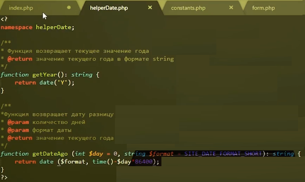
И в нашем случае, если мы передадим 6 дней назад и вторым аргументом не будем передавать ничего, то будет использован формат, который мы использовали в качестве константы. Давайте теперь передадим второй аргумент в функцию, пусть это будет только время.
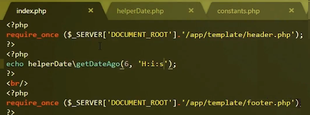
Если мы определяем аргумент по умолчанию, то мы можем его не указывать при вызове функции. Что будет если мы не укажем аргументы ни в первом, ни во втором. Мы увидим ошибку, которая говорит, что у нас не переданы аргументы. Что бы такого не произошло нам нужно передать оба аргумента.
Давайте чуть-чуть более разнообразим. Добавим в тело функции switchcase. Для этого мы сделаем так, чтобы функция возвращала данные только в двух форматах. Перейдем в файл constants.php и добавим новую константу.
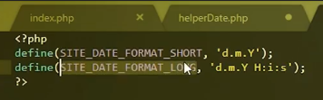
И так если мы во втором аргументе передаем значение ‘long’, то новая переменная, которую мы создали, будет с форматом long,
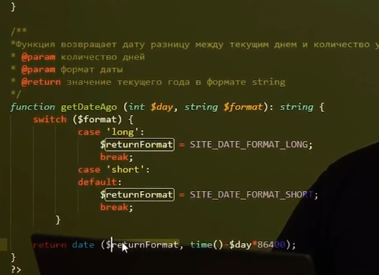
Добавим комментарий, что аргумент принимает или long или short.
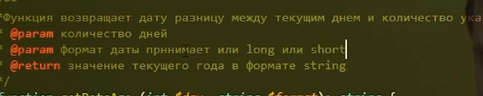
Если мы попробуем отправить некорректный аргумент, то функция вернет по default формату.
Сейчас мы посмотрели пример, в котором мы могли в теле функции, в которой мы могли делать абсолютно любые действия и возвращать значения. Но функция не обязательно должна что-то возвращать. В теле функции могут абсолюно любые действия. Сегодня мы поговорили о том, что такое пользовательские функции, как их определять и использовать, как передавать аргументы, какие действия нужно совершать, чтобы допустить ошибок. На этом модуль завершен, спасибо за внимание.